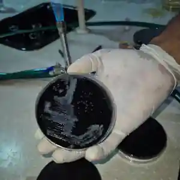

A culture plate photographed during laboratory work in Nigeria, October 2026. The image does not establish the identity or positivity of the cultured organisms.
Sampling for the Campylobacter Control Campaign (CCC) began in Nigeria on Wednesday 7 October 2026. This is an important milestone for the Nigerian team and for the wider consortium as coordinated field activities expand beyond The Gambia.
CCC brings together epidemiology, laboratory microbiology and pathogen genomics to investigate how Campylobacter moves between people, animals and their environments. The Nigerian study will contribute evidence from a different setting, helping the consortium assess which exposures and transmission pathways are shared across sites and which depend on local conditions.
From field sampling to genomic evidence
As sampling and laboratory work progress, the team will build the linked dataset needed for culture, genomic analysis and source attribution. Comparable approaches across partner countries are central to CCC's aim of identifying practical opportunities to reduce exposure and disease.
The photograph above offers a glimpse of the laboratory work. A culture plate alone cannot confirm that Campylobacter has been isolated; identification and interpretation depend on the appropriate laboratory results.
Following progress
Recruitment and laboratory totals will be added to the public dashboard once the Nigerian team's first aggregate site report has been checked and approved. We are not publishing preliminary counts or positivity estimates without validated denominators.